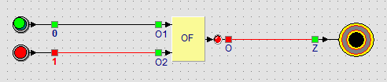

Leerpad › Les 5 van 15

Een huis heeft een bel aan de voordeur én aan de achterdeur. Welke knop je ook indrukt, de bel moet rinkelen. Dat is een OF-poort:
| Voordeur (O1) | Achterdeur (O2) | Bel (zoemer) |
|---|---|---|
| 0 | 0 | 0 |
| 0 | 1 | 1 |
| 1 | 0 | 1 |
| 1 | 1 | 1 |
Leg de tabel naast die van les 4. Bij EN moet alles aan zijn, bij OF is één genoeg. Alleen als beide ingangen uit zijn, is de uitgang van de OF-poort uit.
Vervang in dit voorbeeld de OF-poort door een EN-poort en probeer beide knoppen. Wanneer gaat de bel nu af? Is dat nog een goede deurbel?
Met een EN-poort gaat de bel alleen af als iemand aan de voordeur en iemand aan de achterdeur tegelijk drukt. Met één muis lukt dat zelfs niet. Voor een deurbel is de OF-poort dus de juiste keuze.